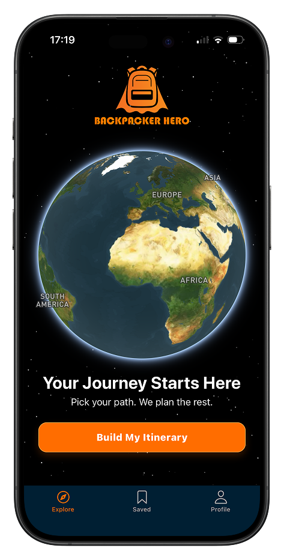
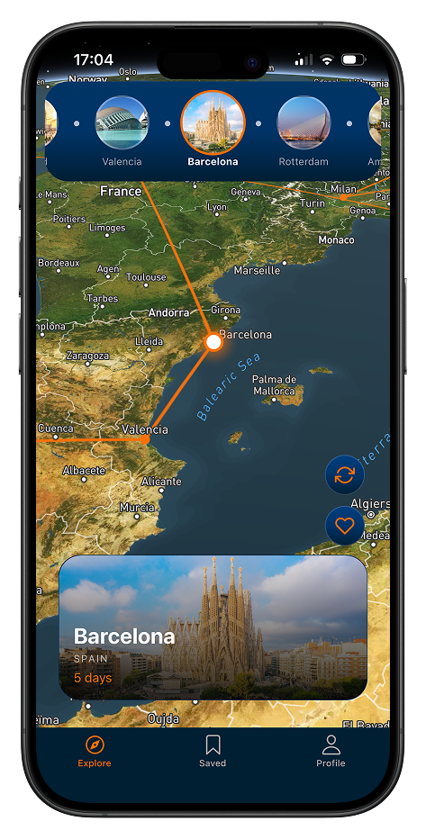
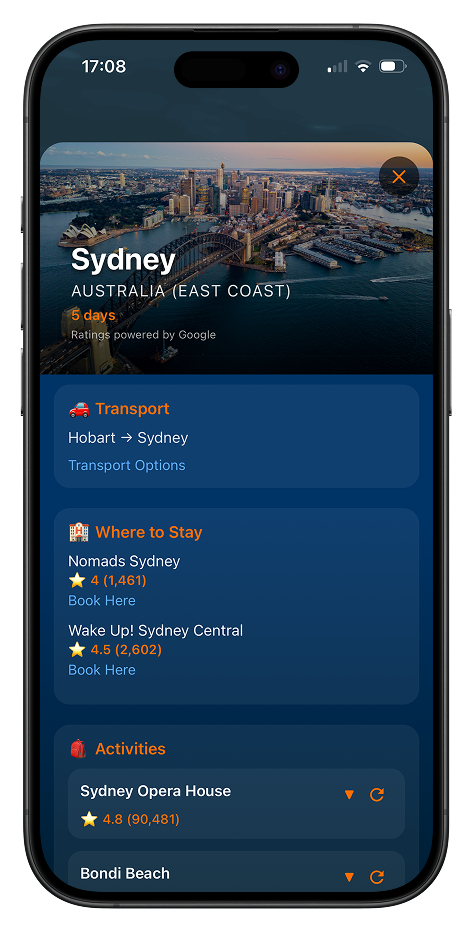
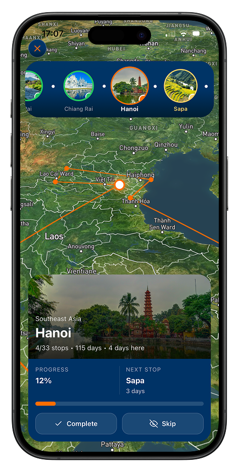

Travelling made simple. Pick your path — Backpacker Hero plans the rest.
This was BENC Labs' first app, no longer available on the App Store. Kept here as a record of where things started — full focus now is on Newely.

Visualise your entire route, destination to destination. Every stop links up on the map so you can see the whole trip at a glance, not just the next flight.

All sorted in one tap, no tab switching. Each stop comes with transport options, places to stay, and top-rated activities, pulled together in a single view.

Watch your journey progress, stop by stop. Mark each place complete as you go, and Backpacker Hero keeps count of how far you've come and what's next.
